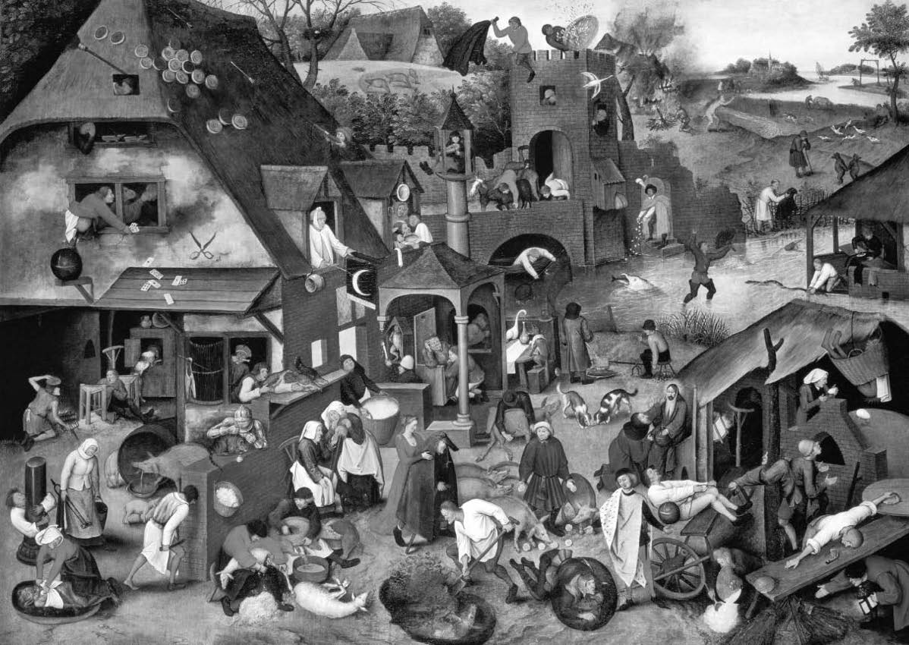

Yorum sorunu
“İnsan doğası” fikrine takıntılıyız; bu hep böyle olmuştur. Derin bilimsel ve tıbbi çalışmalar sayesinde bedensel yapımızın ayrıntılarını biliyoruz. Ama psikolojilerimizin anlaşılması hiç de o kadar kolay değil. Kendimizi hiç durmadan yorumluyoruz ve yeniden yorumluyoruz. Karmaşık varlıklarız, hem kendimizi hem birbirimizi şaşırtabiliyoruz.
İnsan doğası itibarıyla ussal mı duygusal mı? Bencil mi diğerkâm mı? Basiretsiz mi basiretli mi? Saldırgan mı uysal mı? Tek eşli mi çok eşli mi? Vicdansız mı vicdanlı mı? Bunca yıllık deneyimden sonra bile kimi bir yanı kimi diğer yanı savunuyor.
Kütüphaneler mi Laboratuvarlar mı?
Ne tarihçilerin kütüphanelerde ne antropologların sahada yıllarca yaptıkları çalışmalar bu kadim sorulara sağlam cevaplar verebildi. Peki deneysel yöntemler ve bilim daha iyisini yapabilir mi? Bilimler, ya da sözde bilimler, büyük bir hevesle yardıma hazır bekliyorlar. Evrimsel psikologlar Pleistosen çağdaki hominid atalarımıza dair teoriler geliştiriyor, primatologlar şempanzelere ve bonobo maymunlarına bakarak bizim ne olduğumuza ilişkin ipuçları bulmaya çalışıyor. Deneysel ekonomistler insanlara para için oyun oynatıyor, nörofizyologlar beyin taramalarını inceliyor, sosyal psikologlar dünya çapında anketler yapıyor.
Kendimize dair teorilerimiz önemlidir. Herkesin temelde bencil olduğuna inanıyorsam yaşamımı buna göre kurarım: Kimseye güvenmediğim gibi kendim de bencil ve güvenilmez olurum. Genlerimizin kaderimiz olduğuna, kültürün önemli olmadığına inanıyorsam, eğitim için vergi ödemem, çocuklarımın televizyonda ne seyrettiğini umursamam. İnsan doğasına dair hatalı bir görüş aşağıya doğru sarmalın başlangıcı olabilir. O halde, bu sorular kendi başlarına ilginç oldukları kadar doğrudan pratik öneme de sahiptir.
Kültür ve Doğa
Konuya yaklaşırken belki önce şunu sormalıyız: İnsan doğası kavramı hâlâ saygın bir kavram mı yoksa sadece “her şeyin değişmez bir doğal hali vardır” diyen Aristotelesçi anlayışın bir kalıntısı mı? Darwin hem türlerin zaman içinde değiştiğini hem de değişim mekanizmasının başlangıç noktasının türler içindeki varyasyonlar olduğunu savunduğunda bu kavramı zedeledi. Cinsel üremenin ve ona eşlik eden genetik rekombinasyonun işlevi olasılıkla sadece bu çeşitlenmeye yardım etmektir. Dahası genomdan ortaya çıkan canlıya giden yol tek bir doğal ilişki sergilemez; sıklıkla bir sonuçlar çeşitliliği görülür. Genler kendilerini farklı çevrelerde farklı şekillerde ifade ederler. Tamamen genin sorumlu olmadığı bu farklılıklar kalıtım yoluyla aktarılabilir. Tüm umabileceğimiz, canlıların gelişim sürecinde ortaya çıkan sabitlikler gibi, bazı ilginç sabitliklerdir. Çoğunlukla iki gözün ve iki kolun sabitlendiği söylenebilir, ama hangi psikolojik özelliklerin benzer şekilde esnemez olacağını kim söyleyebilir ki? Belki de sabit olan bencillik veya saldırganlık gibi basit bir özellik değil, çevre ve karakter eğilimlerinin ilişkisidir. Sabit olan bencilin bencil olarak yetiştirilirse bencil, saldırganın saldırgan ana ve baba tarafından yetiştirilirse saldırgan olmasıdır; tıpkı dil öğreniminde çocukların Fransızca veya Çince öğrenmelerinin değil, çevrelerini kuşatan ana dil hangisiyse onu öğrenmelerinin sabit olması gibi.
Bunun kendimizi kısmen kültür veya çevrenin sonucu olarak görmemizin bilimsel olmadığını söyleyen budalaca görüşe karşı bizi yeterince uyarmış olması gerekir. Kültür, “Çağın Puslu Ruhu” değildir; çevremizdeki dünyanın üstünde yer alan ayrı, hayaletimsi bir nedensel güç ise hiç değildir. Kültüre başvurmak diğer insanların yaptıklarını içeren çevrenin önemli ve içe işleyen bölümüne başvurmaktır. Bu anlamdaki kültürden dolayı konuştuğumuz anadillerini konuşuyor, takdir ettiğimiz şeyleri takdir ediyor, belli umutlara ve beklentilere sahip oluyoruz: Kültürdür Kanada’daki cinayet oranının komşusu ABD’dekinin yüzde yirmi beşi kadar olmasını sağlayan ve birkaç yüzyılda –doğal seçilimin işleyemeyeceği kadar kısa bir dönemde– kana susamış Vikingleri günümüzün barışçıl İskandinavyalılarına çeviren.
Değişik bilimler veya onların birleşimleri, kendimizi anlamada ilerlemeler sağlayabilir. Fakat bilimi belirli biliminsanlarının ideolojisiyle karıştırmamak gerekir. Bu özellikle biyolojinin sahneye koyduğu uzun soluklu “diğerkâmlığın imkânsızlığı serüveni” için geçerlidir. Biyolojik düşüncede diğerkâmlık, bir başkasının iyiliği için kendi rahatlığını feda etmek demektir ve böyle bir eğilimin evrim süreci içinde tamamen ayıklandığı düşünülür. Bu görüşe göre, Darwinci sahnede hayatta kalanlar ormandaki en rekabetçi, saldırgan ve acımasız canavarlardır. Geçerli olan veya her durumda hâkim olan güçtür.
Şu Çılgın Genler
Seçkin biyolog Richard Dawkins klasik kitabı Bencil Gen’de bu görüşü yumuşatmaya çalışır. Yeryüzünde sadece insanların “bencil genlerin tiranlığına karşı isyan edebileceğini” ve böylece “kötü” olarak programlanmış olsalar bile ılımlı bir “iyilik” durumunda kalmayı başarabileceklerini söyler. Fakat bu çok talihsiz bir dildir. Bütün diğer canlılar gibi bizim de genlerimiz var. Bizim de psikolojimiz var; yani, bu genlerin genetik talimatlara ve çevre koşullarına göre proteinlere ve hücrelere dönüşmesiyle beyin oluşuyor; bu sayede düşünüyor, arzuluyor, konuşuyor, çevremizdeki kültüre uyum sağlıyoruz. Öyleyse, nasıl olur da bu tiranlığa karşı isyan edebileceğimizi düşünebiliriz? Belki de Dawkins’in aklındaki, gerçekten bencilce bir şey yapmak istediğim halde kendime hâkim olup başkası için iyi bir şey yaptığım durumlar. Ama niçin bu genlerime karşı çıkmamın bir örneği sayılsın ki? Ancak “makinedeki hayalet”in pençesine yakalanmışsak “doğa”nın bana yaptırdığını Ben’in, gerçek ben’imin yaptığının karşısına koyabiliriz. Ama bu yanlıştır, çünkü gerçek, biyolojik ben beynin tiranlığına isyan eden bir varlık değildir. Gerçekte ben onu sadece kullanıyorum. Gelecek bölümde benliğin doğanın dışında duran ama gizemli bir şekilde de ona müdahale edebilen bir fail olduğunu düşünen, esası itibarıyla iflas etmiş bu fikir hakkında daha fazla şey söyleme fırsatımız olacak.
Dawkins Darwinciliğin çekirdeğini özenli bir kesinlikle özetler: “Evrim rastgele küçük kalıtsal değişikliklerin rastgele olmayan hayatta kalmalarıyla oluşan rastgele olmayan uyumlayıcı istikametlere yönlendirilir.” Küçük değişim genlerde olur, sonra bunlar kopyalanır ve rastgele olmayan hayatta kalma oranı genlerin ve alellerin çevrelerine göreli uyumunun bir işaretidir. Ama bir organizmanın hayatta kalmak ve evrimleşmek zorunda olduğu gerçeğinden hareketle onun kendi hayatından, ya da “çıkarlarından”, ya da yavrularının sayısından, ya da doğurganlığından, ya da benzeri tek bir şeyden başka hiçbir şeyi umursamamak zorunda olduğunu çıkarsayamayız. İşlevden hareketle açık psikolojiye yapılan çıkarım hatalıdır. Bu tam da cinsel dürtülerimizin evrimsel bir işleve, yani üreme işlevine sahip olmasından hareketle her cinsel ilişkiye girmeyi istediğimizde istediğimiz tek şeyin çocuk sahibi olmak olduğunu çıkarsamaya benzer. Neyse ki, insana özgü hazlar ve ilaç sanayi sayesinde durum böyle değildir.
İyi Adamlar Ne Zaman Gelir?
Öyleyse, Darwin’in tüm bize söylediklerine rağmen başkalarına yardım etmekten, üremeye yönelik olmayan seksten zevk almamızla aynı anlamda, zevk alabiliriz. Ayrıca akrabalarına, kendilerine yardım edenlere, komşularına veya topluma yardım etmeyi göze alan bireylerin bundan kaçınanlara göre daha iyi bir şey yaptığını gösteren birçok evrimsel dinamik de vardır. İyi adamlar bazen birinci gelirler; bu da daha az ölümcül parazitlerin daha açgözlü ama daha ölümcül kuzenlerine göre daha başarılı olmasından daha şaşırtıcı değildir – bu dinamik sayesinde tavşanlardaki miksomatöz gibi hastalıklar zamanla daha az ölümcül olma eğilimi gösteriyor. Aynı mekanizmadan dolayı, ya birlikte ya da ayrı takılmamız gereken bir dünyada birlikte takılmaya uyum sağlayanlar en doğrusunu yapmış olacaklardır (bkz. Toplum Diye Bir Şey Var mı?).
Beyin bilimleri gerçekten de bize kendimiz hakkında birçok şey söylemeye hazır. Duyguların, mutluluğun, coşkuların, heyecanların ve diğer ruh hallerinin altında yatan mekanizmalar yoğun çalışmalara konu oluyor. Bu çalışmalar insan doğasına ilişkin demirbaş sorulara cevap verebilecek mi? Konuyla ilgili daha genel bir güçlük var.
Benim şu hoş Paris bulvarları düşümü tartışırken gündeme gelen soruyu hatırlayalım (bkz. Makinedeki Bir Hayalet miyim?). Beynin tikel bir bölümüyle benim Paris düşüm arasındaki (keşfedilebilirse) tek bağıntı şudur: Eğer bu bölüm değiştirilir ya da yok edilirse, benim gündüz düşüm de değişebilir veya yok olabilir, ya da eğer bu bölüm yapay olarak uyarılırsa, ben yeniden Paris düşü görmeye başlayabilirim. Belki çok yüksek büyütmeyle, bu nöron ateşlenirse benim düşüncelerimde, Paris’te güneşin açtığı görülebilir. Bu kesinlikle ilginç olurdu, ama pratikte böylesine yeri tam olarak saptanabilen nedensel güçlere rastlamak kolay değildir (genelde, daha “dağıtılmış” sonuçlar, yani ayrı, tikel bir düşüncede bile bütün nöral ağın işbaşında olduğu sonuçlar söz konusudur). Fakat her durumda, böyle bir sonucun insan doğası hakkında nasıl düşüneceğimizi etkilemesinden önce, psikolojinin sonuçtan çıkmadığı, bizzat sonucun içinde olduğu üzerine düşünmek zorundayız. Bu beyin bölümünün Paris bulvarları hakkında düşünmemden sorumlu olduğu yorumu tamamen öznenin gerçekten böyle düşünüyor olduğu önsel bilgisine dayanır.
Öznenin ne hissediyor veya düşünüyor olduğuna dair hükümde bulunmamızı sağlayan öznenin söyledikleri ve yaptıklarıdır, yani ortak bakışın altına düşen büyük ölçekli davranışlardır. İdeal bir bilimde bile, beyin hakkındaki olgular, gözlemlenebilir sözlere, eylemlere veya yazılara göre ayarları yapılıp psikolojik olarak yorumlanır. Daha özlü bir şekilde ortaya koymak gerekirse, beyin yazısının gerçeğin yazısına göre ayarının yapılması gerekir.
Bu bazı amaçlar için uygun bir tavırdır. Fakat eğer kişilerin genel davranışları (hepimizin bencil olup olmadığı sorununda olduğu gibi) yorumu belirsiz ya da tartışmalı bırakıyorsa, bu konuda nörofizyoloji tek başına bize yardım edemez. Gerçekten de tikel durumlarda beyin olayları ikincil bir rol oynayabilir. Eğer birisi görünüşte tamamen samimi tavırlarla kızgın olduğunu reddederse, hızlı bir taramayla başka durumlarda güvenli bir şekilde kızgınlıkla bağıntılı olduğu belirlenmiş beyin etkinlikleri görüntülenebilir. Bu da bizim onun sözlerini kuşkuyla karşılama eğilimimizi güçlendirir. Fakat davranışları yeterince sakinse, gülümsemesi sahici görünüyorsa ve sesi yumuşaksa, o zaman, onun beyni hakkında kızgınlığın kendini dışavurduğu diğer yollarla uyumlu olmayan tek bir düzenliliğe sahibiz demektir. Bu durumda ne düşüneceğimiz konusunda kuşkuya düşeriz. Başka işaretler yoksa o zaman belki sıradan gözlemle onun kızgın olduğunu söyleyebiliriz: Bir kişinin sesindeki zorlama vurguyu, gözlerindeki aldatıcılığı, gülüşündeki sahteliği veya öfke kıvılcımını bastırmadaki başarısız girişimlerini ne kadar çabuk yakaladığımızı bir düşünün.
Cesur Yeni Gelecek?
Gerçek güdülerimize ve inançlarımıza dair soruların cevaplanması güçtür. Davranışları genellemelere ve yasalara bağlamak istiyoruz. Fakat bireyler arasındaki çeşitlilikten, bireylerdeki değişimlerden ve bazen iyi bazen kötü sürprizlerden başka bir şey bulamıyoruz. Bu yetmezmiş gibi bir de sürekli “yorum belirsizliği” sorunuyla karşı karşıya kalıyoruz. George boğulmakta olan bir çocuğu kurtarıyor: Acıdığı için mi yoksa ün kazanmak için mi? Betty kirpiklerini kırpıştırarak Albert’e bakıyor: Âşık olduğu için mi yoksa bir şeyler koparmak için mi? Bazen bu soruları cevaplayabildiğimizi düşünürüz, ama çoğunlukla bir şey söyleyemeyiz. Belki öznenin kendisi de söyleyemez: Ne de olsa kendi yaptıklarımızı yorumlama kapasitemiz mükemmel olmaktan uzaktır (bkz. Kendi Kendime Nasıl Yalan Söyleyebilirim?). Belki de bazen kesin doğru diye bir şey yoktur. Betty’nin niyetini Betty, hatta Tanrı bile bilmeyebilir, zira Betty’nin Albert’e, onun aşkına ve sahip olduklarına ilgisi tek-amaçlı değildir.
Konuyla ilgili acil bir soru var: Bilimin psikolojilerimizin altında yatan mekanizmalar hakkında bize söylediklerinin ışığında insan doğasını değiştirebilir miyiz, ya da değiştirmeli miyiz? Buna doğrudan “Zaten değiştirmiyor muyuz?” diye karşılık verilebilir. Çocuklarımızı toplumsallaştırdığımızda, onlara dilimizi öğrettiğimizde, onları mülkiyetle, vaatle, sabır ve dayanışmayla, gelenekler ve normlarla tanıştırdığımızda ve yetişkinlerin yaşamına hazırlamak için onlara milyonlarca küçük yeteneği kazandırdığımızda bunu yapıyoruz. Anne ve babaların çok iyi bildiği gibi bu ıstıraplı bir süreçtir. Elbette eğitimcilerin önlerindeki seçeneklerle ilgili sonu gelmez tartışmalara giriyor, karanlıkta yol almaya çalışıyoruz. Çocuklara okumayı öğretmenin en iyi yolunu bile bilmiyoruz mesela. Elbette en iyi yol diye bir şey de olmayabilir. Belki de bir “yollar çokluğu” vardır: Bir kısmının bazı kişiler için, diğer bir kısmının da diğerleri için uygun olduğu birçok yol.
Bu kültürel etkidir. Ama kanımca öjenistlerin umduğu şudur: Seçmeci üretim ve genetik mühendislik ilke olarak sonuçta gen havuzunu değiştirebilir ve farklı türde insanlar ortaya çıkarabilir.
Bazı basit genetik hatalardan dolayı kimi insanların yakalanma eğiliminde olduğu fiziksel rahatsızlıkların ve hastalıkların önlenmesini veya ortadan kaldırılmasını sanırım kimse tartışma konusu yapmayacaktır. Bunların belki de kamuoyunda en bilinen örnekleri Huntington Kore hastalığı ve Dunchenne kas distorfisidir. Ama asıl soru, bozuklukları ve hastalıkları giderecek değil de, bir yüz yıl kadar önceki öjeni programlarından umulduğu gibi, insan doğasını ıslah edecek bir genetik mühendisliğine razı olup olmayacağımızdır? Bu iyileştirmeleri, örneğin, daha adil, daha az bencil, daha cesur, daha zeki, daha yaratıcı, daha basiretli, daha eğlenceli ve daha arkadaş canlısı insanların üretilmesi olarak düşünebiliriz. Elbette eski öjeni programları bize şeytansı olmadıklarında da komik geliyor, ama bahse girerim ki bugün birçok insan onlardan daha iyisini yapabileceklerini düşünüyor: “Eskiler bir kâbus yarattılar, ama biz, 21. yüzyılda sihirli değneğimizle her şeyi kolayca halledeceğiz. Ütopyanın amacını biliyoruz, bunu gerçekleştirmek için yeterli sorumluluğa sahibiz.” Ben bu iyimserlik dalgasına kapılmamamız gerektiğini düşünüyorum. Her şeyden önce, açık bilimsel uyarılara kulak vermeliyiz. Normal insan gelişiminin, özellikle de beyin gelişiminin polijenik olmayan, yani bütün bir genler topluluğuna bağlı olmayan çok az yönü vardır. Bu yüzden bir olasılık patlamasıyla karşı karşıyayız: 25,000 genimizin her biri kalan 24,999 genin küçük bir bölümüyle bile bir sürü yolla etkileşime girebiliyorsa, altta yatan süreçlerin sayısı milyonlarla ölçülecektir; bu nedenle onları en ince ayrıntılarına kadar anlamamız son derece uzak bir ihtimaldir. Bununla karşılaştırıldığında cesur yeni günün doğuşunun öncüsü ilan edilen ve çok alkışlanan genomun haritasını çıkarma projesi bile basit kalır.
Ayrıca genetik ütopyanın siyasetin ve ticaretin olağan baskılarından bağışık olacağını düşünmek saflık olur. Örneğin 20. yüzyıl öjenistleri Aryan ırkının üstünlüğünü savunuyorlardı ve insan türünün mükemmelliğine dair çok tuhaf fikirleri vardı. Yüzyılımızda ve sonrasında neler olabileceğini kim bilebilir? Kapitalizm tüketici kıskançlığını ve hayat tarzı memnuniyetsizliğini teşvik edecek bir müdahale isteyebilir. Sağ kanatta yer alanlar sosyal adalete ilgi gösterilmesini azaltacak, sol kanattakiler bu ilginin artmasını sağlayacak bir müdahale isteyebilir. İlaç şirketleri kendilerinin sürekli yardımı olmadan çocukluğun azgınlığını yok edebilecek çalışmalara ödenek ayırmayacaktır. Ahlakçılar oylarını merhamet ve zekâdan yana kullanırken Pentagon daha az merhametli ama daha itaatkâr olan askerler için bastıracaktır. Başka bir deyişle, adına “Bilim” denilen bir soyutlamanın, anlayışlı, yaratıcı, yansız, adil, iyiliksever bir görünmez elin var olduğu fikrine karşı uyanık olmalıyız: Böyle bir el yoktur.
Bilimsel ve siyasal sorunların yanı sıra felsefi sorunlar da vardır. Konuyla ilgili kadim felsefeden gelen iki nokta var: İlki Sokrates’in erdemlerin birliği öğretisi, yani insanın salt cesur ya da adil, salt cömert ya da merhametli olamayacağı fikridir. Bir erdemin hayata geçirilmesi diğerlerinin de hayata geçirilmesini gerektirir. Cesaret salt aptallık veya imgelem yoksunluğu olmayacaksa, örneğin, olayların farkında olmayı ve doğru yargılama gücünü gerektirir; yine cesaret çılgın bir atılganlık olmayacaksa onun ihtiyat ve basiretle harmanlanması gerekir. Diğer erdemler için de durum aynıdır. Bir yargıç cesur olmadan bağışlayıcı olamaz, zira bazen ceza ve ölümle karşılaşan insanların öfkeleri karşısında cesur olmak gerekir. Ve bu bütün erdemler ve bütün insanlar için geçerlidir.
<>
Adına “Bilim” denilen bir soyutlamanın, kavrayışlı, yaratıcı,
tarafsız, adil bir görünmez elin var olduğu ve gelecek
insanları bu elin insafına bırakmamız gerektiği fikrine
karşı tetikte olmalıyız. Böyle bir el yoktur.
<>
Bu durum bile tek başına genetik müdahaleyle insan doğasını ıslah etme projelerinin son derece kaygı verici olduğunu gösteriyor. Daha sevecen, daha cömert insanlar mı istiyorsunuz? Bunun için biz insanları sevecenliği açıkça ödüllendiren, aksi tutumların cesaretini kıran ortamlarda yetiştirmeye çalışıyoruz. Ama bütün bu sıkıntılı kültürel temrinleri “bypass” eden “sihirli bir genetik kurşuna” sahip olabilir miyiz? Yanlış anlaşılmış sevecenlik kötüdür; aşırı sevecen anne ve babalar sıklıkla çocuklarını şımartırlar, baskı altında tutarlar; çocuklarının kendi başlarına nefes almalarına, bir şey yapmalarına fırsat tanımayarak olgunlaşmalarını engellerler. Aristoteles’in söylediği gibi, orta yolu arıyoruz. Bu arayış da, Sokratesçi öğretide vurgulandığı gibi, yargı gücünü, ince düşünceyi, hayal gücünü, başkalarının onuruna saygıyı ve benzeri birçok beceriyi gerektiriyor. O zaman bile tam doğru orta yolun ne zaman başarıldığı konusunda uzlaşmamız hiç de kolay olmayacak. Bütün yapabileceğimiz genel olarak bunu amaçlamak ve sonrası için kendimize şans dilemek…
Klasik gelenekte vurgulanan ikinci nokta içinde yaşadığımız dünyada işlerin daha da zor olduğudur. Çoğu insan bazı zamanlarda ve bazı durumlarda müşfiktir. Ünlü bir örnek vermek gerekirse Hitler hayvanlara karşı çok sevecendi. Koşullar ne olursa olsun şefkatsizliğin gelişmesini engelleyen bir genetik müdahale yolu bulduğumuzu düşünün. Bu büyük bir ilerleme olarak görülebilir – elbette bunun bazı insanlara diğerlerinden daha az cömert davranmamıza neden olan, bırakın adalet duygusunu, haset, kıskançlık, hınç ve hırs gibi bazı kişilik eğilimlerini de önleyip önlemediğini sorana kadar. Önlemesi gerekli gibi görünüyor, ama o zaman ortaya çıkan bu özne insanların karşılaşabileceği çeşitli durumlara ve olaylara kolayca uyum sağlayabilen, uyanık ve etkin bir özne midir? Yoksa takdir ettiğimiz her şeyin bir parodisi olan, sinirleri alınmış bir tür Stepford zombisi mi? Elbette istediğimiz, insanların uygun durumlarda uygun derecede cömert ve sevecen olması. Aslında zaten sahip olduğumuz bir şeye, yani eğitim ve deneyim yoluyla düzenlenmeye açık görece esnek bir eğilime sahip olmayı istiyoruz. Ama sorunlarla dolu yaşam yolunda hiçbir deneyim yaşamadan başarıyla yol almak hiç deneyimsiz Fransızca konuşmaktan veya bilmediğin bir kenti hiç deneyim yaşamadan dolaşmaktan daha olası değildir.
Kendimizi öjeniklerin şu eski ve görünüşte ihtilafsız “zekânın geliştirilmesi” amacıyla sınırlamak bile kaygıları ortadan kaldırmaz. Zekâ iyiye de kullanılabilir kötüye de, stratejik olarak da kullanılabilir işbirliği içinde de. Kurnaz Odysseus Agamemnon’un adamlarının en zekisiydi; yalanları, hileleri, entrikaları ve düzenbazlıklarıyla takdir toplardı. Ayrıca zekâ monolitik bir özellik değildir. Akademik yaşamın sihirli çayırları, alanlarında parlak ama alanlarının dışında hiç de güvenilir olmayan insanlarla doludur. Bana kalırsa araştırmacılar yanlışlıklardan sorumlu bir gen bulana ve onu hiçbir yan etkiye meydan vermeden topluluktan ayırana kadar büyük beklentilere girmemeliyiz.

FELEMENK ATASÖZLERİ
Peter Brueghel / Büyük Brueghel (yak. 1564-1638)
Başta söylediğim gibi, insan doğasına dair araştırmalar felsefe kadar eskidir. Homeros, Augustinus, Shakespeare ve Proust kadar eski, oyun kuramcıları, evrimci psikologlar, nörofizyologlar, farmakologlar, zoologlar, iktisatçılar, kuantum teorisyenleri ve mühendislerinin en son fikirleri kadar yenidir. Herkese kulak vermek çok zordur, bu yüzden dikkatli olmalıyız. Ama bütün bu şenlik için de minnettar olmalıyız.